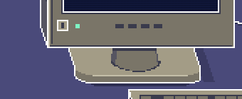


What changed, what was measured, and the limits · Open local preview
Same viewport, same 2× scale, same crop rectangles in artwork pixels. Close-ups are shown at a further 2× with nearest-neighbour scaling.
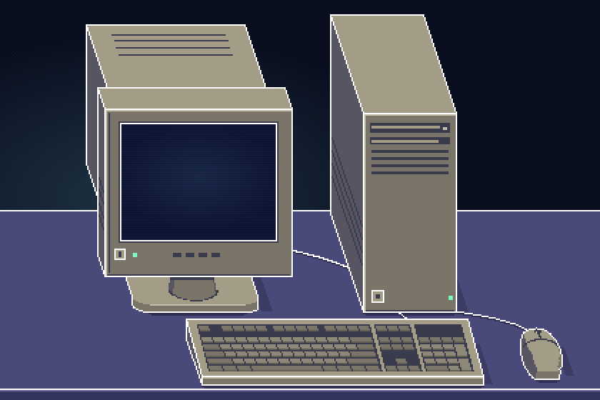
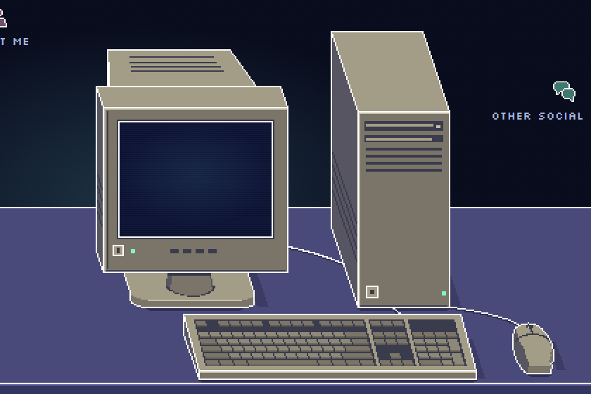

Animations parked at 100ms, 700ms and 1200ms of the 2000ms cycle: before the press, during the 200ms hold that begins with contact at 620ms, and after the 200ms fade.
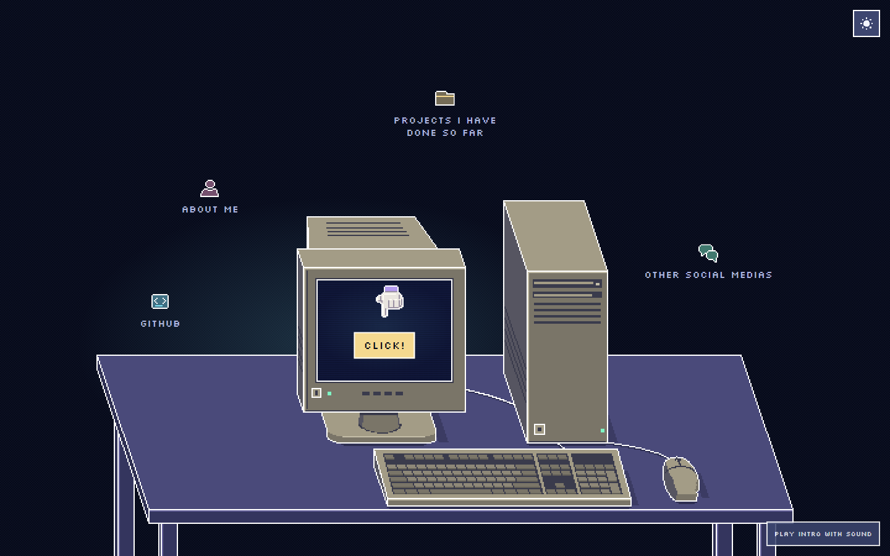
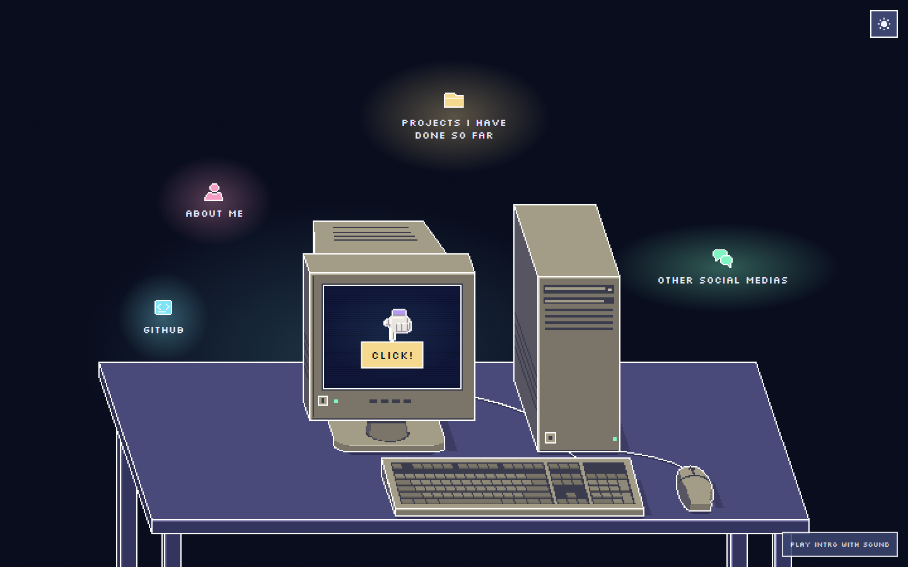
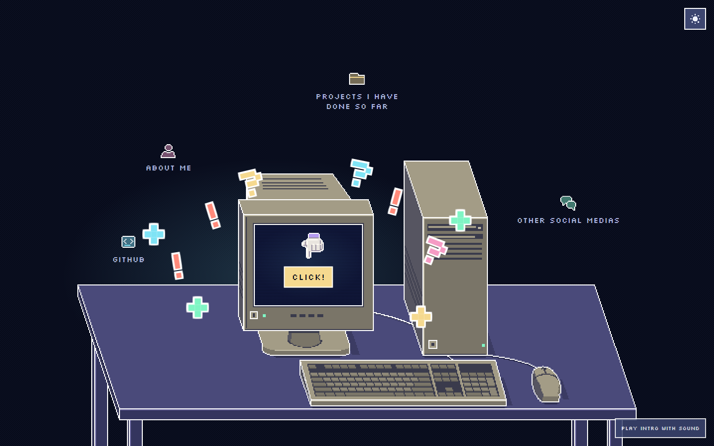
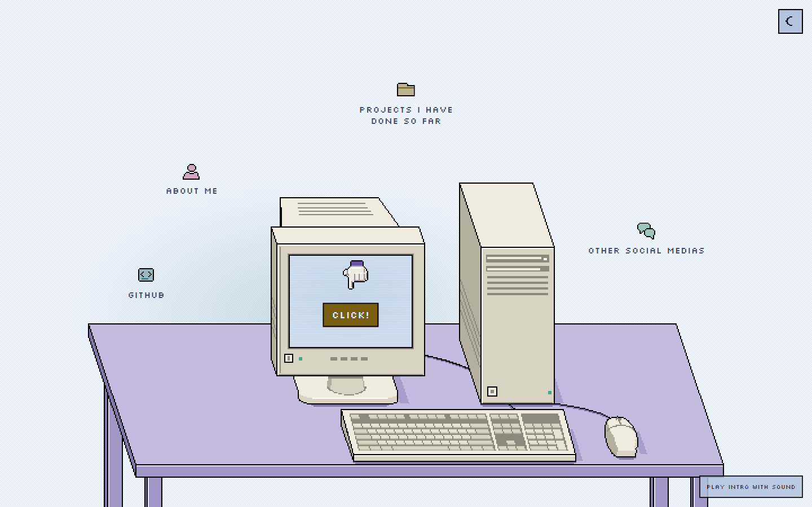
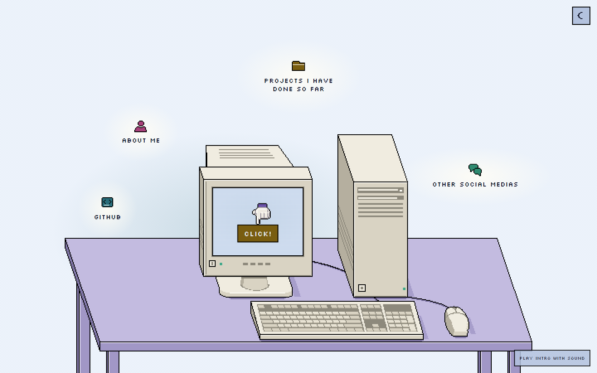
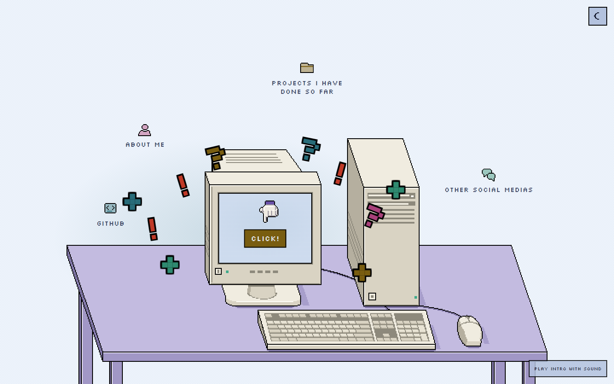
Not parked frames: each was taken as soon as a live cycle's lamps crossed 90% lit. The key is down and the burst is leaving the glass in every one.
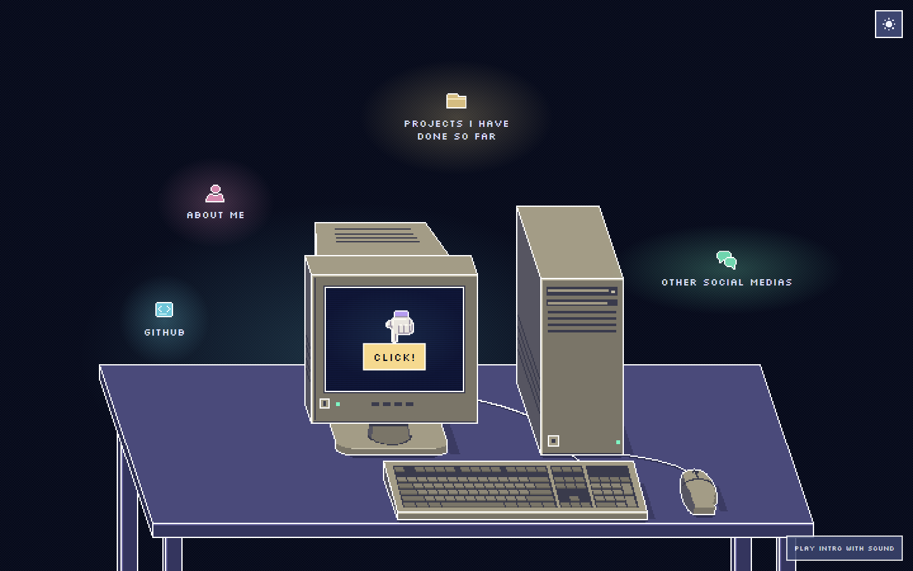
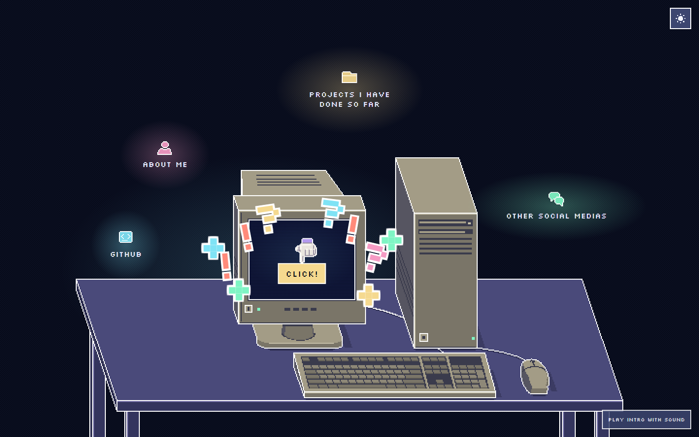

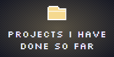
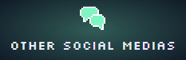
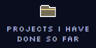
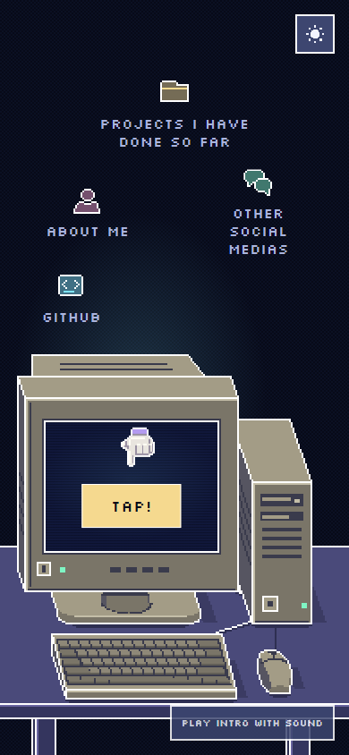
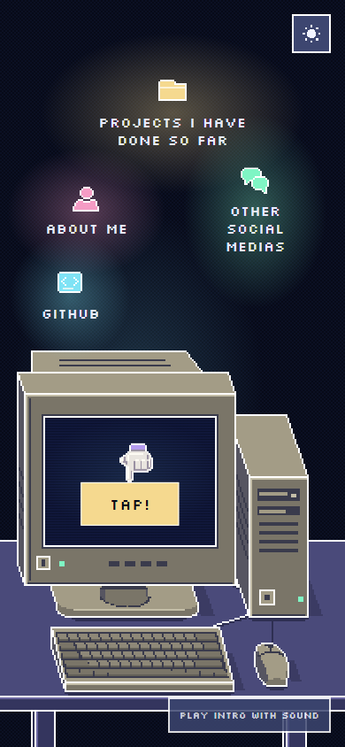
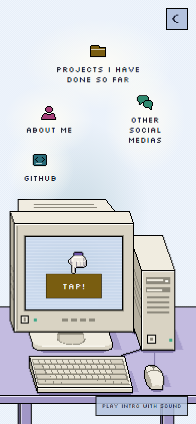

Local review evidence only. Work is not deployed.